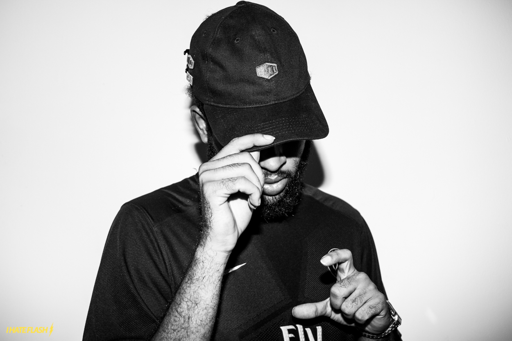
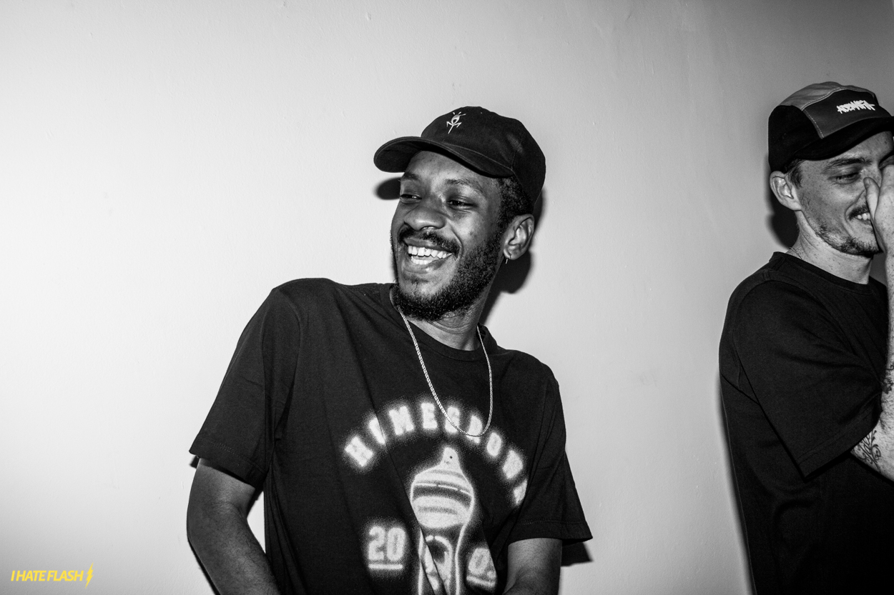
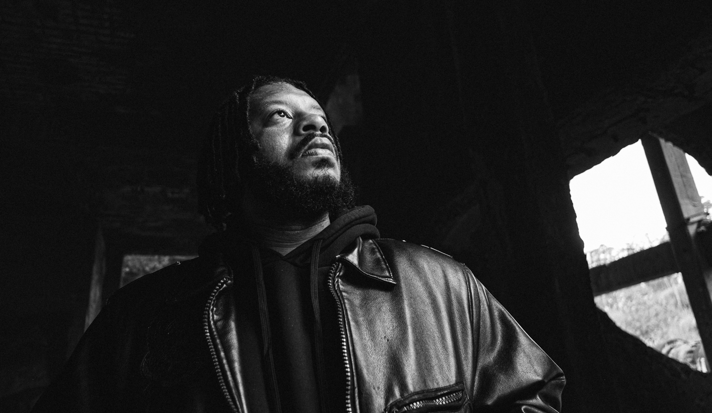
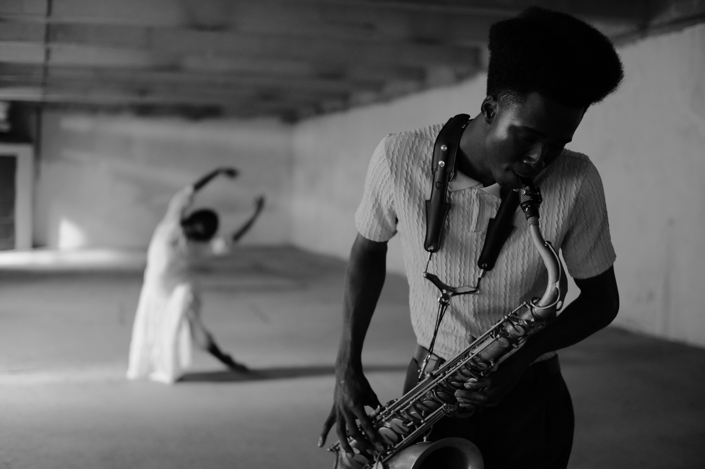
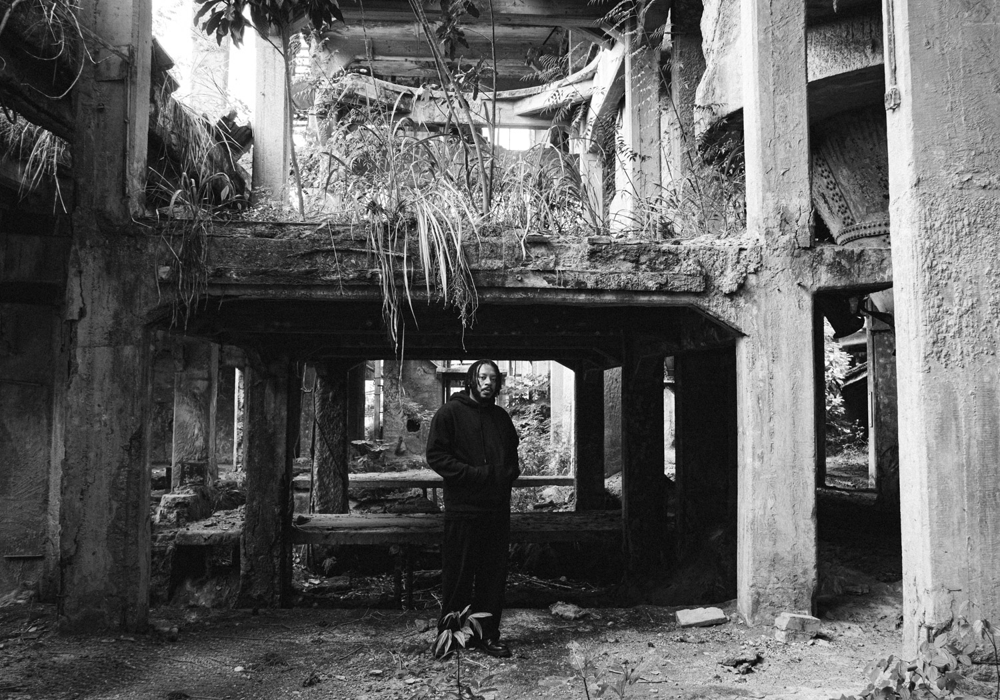
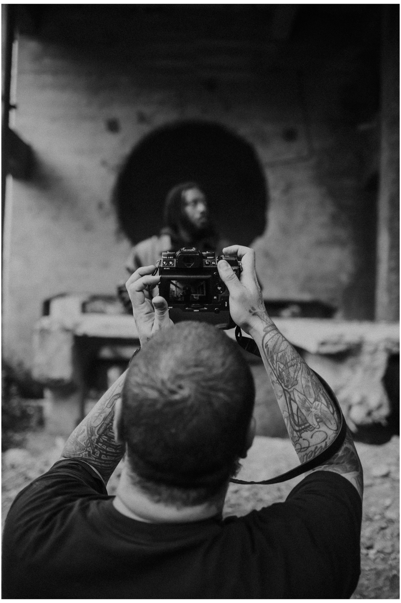

Bastidores: Castelos & Ruinas
Galeria do Álbum
A galeria a seguir reúne registros exclusivos das sessões fotográficas do álbum Castelos & Ruínas, lançado em 2016. As imagens capturam a essência da obra: crua, urbana e poética.






Informações e Números do Álbum
Ficha Técnica: Castelos & Ruínas
| Atributo | Informação Oficial |
|---|---|
| Data de Lançamento | 18 de Março de 2016 |
| Gravadora / Selo | Pirâmide Perdida (Independente) |
| Produção Musical | JXNV$ (Jonas Profeta) e Sly |
| Gênero Musical | Rap / Hip-Hop Nacional |
| Total de Faixas | 13 Canções |
| Local de Origem | Rio de Janeiro, Brasil |
Conquistas e Repercussão Digital
| Plataforma / Premiação | Marca Alcançada |
|---|---|
| Genius Brasil | Eleito o Melhor Álbum de 2016 |
| Spotify (Música: Caminhos) | Mais de 55 Milhões de streams |
| Spotify (Álbum Completo) | Mais de 160 Milhões de reproduções |
| Rolling Stone Brasil | Top 10 Melhores Discos do Ano |
| YouTube (Clipe Oficial) | Mais de 25 Milhões de visualizações |
| Certificação Digital | Equivalente a Disco de Ouro |